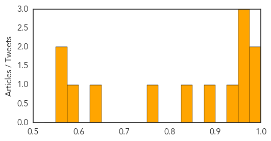
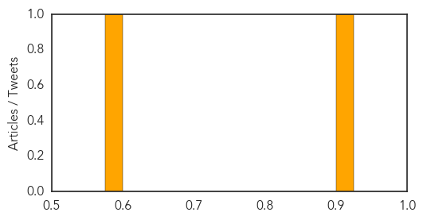

Dengue Fever
30-Day Web Trend
0 alerts, 0 warnings

30-Day Twitter Trend
3 alerts, 3 warnings

Article Locations

Article Confidences
Top Articles:
- 0.992
- News Scan for Nov 09, 2015
- 0.980
- Malaria spreading in West Darfur camps - Sudan
- 0.958
- Metro Cebu, The Freeman Sections, The Freeman
- 0.957
- Diseases to spread rapidly on insects
- 0.956
- State launches ‘Fight the Bite’ campaign to stop dengue fever in Hawaii
- 0.940
- WHO sends medical aid to Yemen to respond to Chapala and the consequences of conflict - Yemen
- 0.898
- Untrained staff handling dengue-hit districts
- 0.847
- Hospitals overwhelmed by suspected dengue cases
- 0.766
- Wide Campaign Against Dengue Fever in Malaysia
- 0.637
- Health department confirms dengue fever case in East Oahu
- 0.593
- 30 dengue patients in Tripura
- 0.568
- No fresh strategy to fight dengue, admit officials
- 0.551
- Kelantan records 151 typhoid cases as of Oct 31
Top Tweets:
- 0.631
- Flavivirus news: Dengue fever confirmed in 19 Big Island cases - Travel Weekly: Huffington Post... https://t.co/WiQVLRZa9r pathogenposse
- 0.571
- Flavivirus news: Officials to give update on dengue fever outbreak - KHON2: KHON2Officials to g... https://t.co/cmTMd6Qhqw pathogenposse
Pertussis
30-Day Web Trend
0 alerts, 0 warnings

30-Day Twitter Trend
0 alerts, 0 warnings

Article Locations

Article Confidences
Top Articles:
Top Tweets:
-
No tweets found for Nov 09, 2015